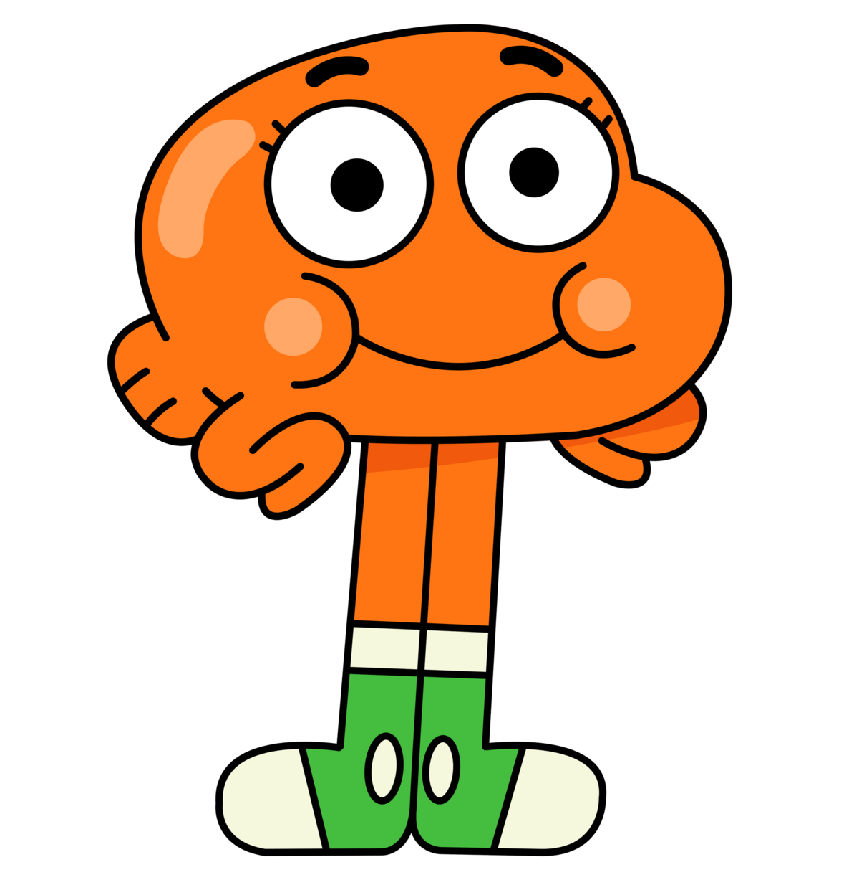

Darwin Raglan Caspian Ahab Poseidon Nicodemius Watterson III mais conhecido como Darwin, é o deuteragonista de O Incrível Mundo de Gumball. Ele costumava ser o peixe de estimação de Gumball, mas um dia cresceram pernas nele pelo amor de Gumball Watterson , ele ganhou a habilidade de falar e se adaptou a vida fora da água e assim a Família Watterson decidiu adotá-lo.Ele estuda com seus irmãos Gumball e Anais na escola de Elmore Junior High.Ele tem uma queda pela Carrie, eles começaram a namorar em O Cupido.
